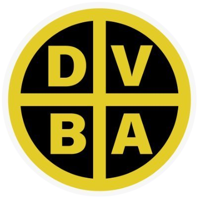

Dirección de Vialidad de la Prov. de Buenos Aires · Plan de Seguridad en la Circulación
Iniciá sesión para cargar y ver partes diarios.
Se muestran registros dentro de ±5 días hábiles (L-V) de la fecha del parte, sobre la misma ruta.